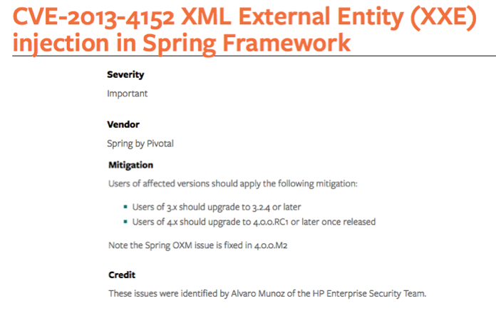

While researching SpringMVC Restful APIs, I found out that any RESTful webservice built with SpringMVC and using JAXB as mashalling library to convert XML object representations to Java objects, was vulnerable to XML eXternal Entity Injection (XXE) attacks since the JAXB was configured to resolve external entities by default and it could not be configured to not do so.
SpringMVC uses SpringOXM (Object to XML Mapper) to automatically convert XML messages into Java objects so developers dont need to process the XML message and instantiate their own class instances, they just need to declare what type they are expecting in their controller method. For example:
public void createContact(Contact c) {
save(c);
}
So when their web method receives an XML message like:
<contact>
<name>John</name>
<lastname>Smith</lastname>
<description>Friend</description>
</contact>
SpringOXM will automagically take the XML body and process it in order to give the developer's method a Contact instance to play with. The problem, as with any XML processing technology is that resolving XML entities can be very dangarous if processors take untrusted XML input and they are not securely configured to avoid entity resolution. More on XXE attacks.
In the SpringMVC case, SpringOXM is not an XML processing library but just a wrapper around different solutions. This allows the developer to choose between different libraries like JAXB, Castor or XStream to process the XML input. In our research, we proved that XStream wrapper (XStreamMarshaller) was not vulnerable since it does not process the DOCTYPE declaration block. Castor was vulnerable by default but the Castor wrapper (CastorMarshaller) can be configured to not resolve XML entities. However, JAXB wrapper (Jaxb1Marshaller and Jaxb2Marshaller) was vulnerable by default, and the wrapper did not exposed any property to avoid entity resolution so that any Spring webservice using JAXB as its marshalling library was vulnerable to XXE and they could do nothing about it. Unfortunately, JAXB is the most popular solution since its the Java standard so its the most widely adopted.
The issue was reported to the Spring security team that responded very quickly and came up with a patch and CVE in one month.
